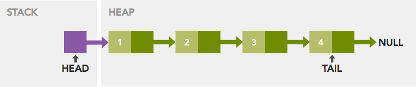
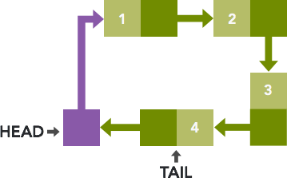

Linked List
Overview
Linked List:
- Is a linear collection of data elements
- Each element called a node
- Nodes a linked to each other
- Each node is composed by a data and a reference (link) to a next node in sequence
- A Node will be defined in Heap memory, but the Head (pointer to the first node) will be stored in Stack

Both of Stack and Heap are stored in computer's RAM.
- Stack: is used for static memory allocation during compiling. Value of stack are stored directly to the memory and access to this memory is very fast.
- Heap: is used for dynamic memory allocation during run time. Access to this memory is a bit slower but the Heap size only limited by the size of virtual memory.
Use stack if you know exactly how much data you need to allocate before compile and it's not too big. Use heap if you don't.
Pros and Cons
Pros:
- Allows efficient insertion and removal of elements from any position in sequence during iteration
- Can be used to implement other common data types such as list, stack, queue, associative array,...
Cons:
- Has no cache locality since the elements are not contiguosly
- Difficult in reverse travelling linked list
Comparision with Array
Linked List vs. Array:
- Linked list elements can easily be inserted or removed without reallocation or reorganization of the entrie data structure, because data items need not to be stored contiguosly in memory

- Therefore, no random access on linked list (index). need to scan the list all the time.
- Linked list can be allocating or deallocating in runtime, array is allocated in compiling time
- No need to define an initial size for linked list
- Used more memory than array because of pointers
Different Linked List Types
There are 4 types of Linked List:
Singly Linked List
Singly Linked List is type of list that each node contains a data field and a next field, which is a pointer that points to the next node in the sequence.
Operations that can be performed on singly linked list is: insertion, deletion and travelsal.
An implementation of a node of Singly Linked List is very simple:
struct node {
int data;
struct node* next;
};
Doubly Linked List
A node in Doubly Linked list has one data field and two pointers, the forward pointer that points to the next node, and previous pointer will points to the previous node in the sequence, or you can call it next/prev.
An implementation for a node in Doubly Linked List could be:
struct node {
int data;
struct node* next;
struct node* prev;
};
Multiply Linked List
In Multiply Linked List, each node contains two or more link fields. Doubly Linked List can be seen as a special case of multiply linked list.
A node for multiply should be implement like this:
struct node {
int data;
struct node** links;
};
Circular Linked List
If the tail node of the list has a link to Head or any other Node in the list, we call it is a Circular Linked List:

Solving Linked List Problems
Count
Count number of times a given int occurs in a list:
Get value of a node
Given a number n, write a function that returns the value stored in the nth node of a list:
Delete List
Given a list, write a function to deallocate all of its memory and set it head to NULL (empty list)
Pop
Write a function to return the last node, after remove it from the non-empty list.
Insert
Write a function to insert a node in the middle of the list:
Sorted Insert
Given a list that is sorted in increasing order, write a function to insert a node to the correct sorted possition in the list.
Sort
Write a function to rearrange the node of a list in increasing order:
Append
Write a function that takes two lists A and B, append the list B to the end of A, then set B to an empty list.
Split
Given a list, write a function to split it into two sublists, one from the front half and one from the back half.
If the given list has odd length, the extra element should go to the front list.
Remove Duplicates
Write a function which takes a list that sorted in increasing order, and delete any duplicate nodes in the list.
The list should only be traversed once.
Alternating Split
Write a function that takes one list and divides up its nodes to make two smaller lists.
The sublists should be made from alternating elements in the original list. So, if the list is $( a, b, a, b, a )$, then one sublist should be $( a, a, a )$ and another should be $( b, b )$.